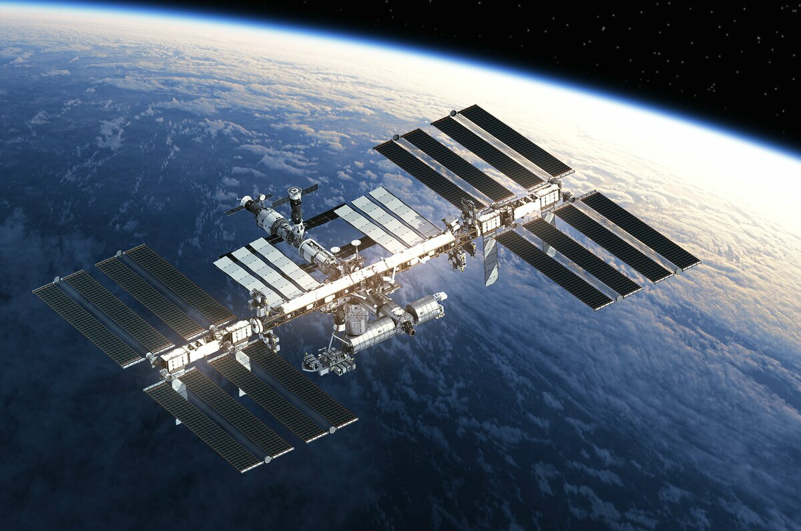

Первый космический корабль "Восток-1"
«Восток-1» («Восток») — советский космический корабль из серии «Восток», первый в мире
космический аппарат, поднявший на своём борту человека на околоземную орбиту.
На корабле «Восток» 12 апреля 1961 года лётчик-космонавт СССР майор ВВС Юрий Алексеевич Гагарин совершил первый в мире пилотируемый полёт в космическое пространство. Старт корабля состоялся с советского космодрома «Байконур» в 9 часов 7 минут по московскому времени (06:07:00 UTC). Корабль выполнил один оборот вокруг Земли и совершил посадку в 10 часов 53 минуты (07:55:00 UTC) в районе деревни Смеловка Саратовской области. Длительность полёта составила 108 минут. Корабль стал и первым в мире управляемым космическим аппаратом, позволившим совершить полёт в космос.
Юрий Гагарин приземлился в Саратовской области. С 12 по 14 апреля 1961 года находился на отдыхе в Куйбышевской области. 14 апреля 1961 года Москва встречала Гагарина как национального героя. После прибытия в московский аэропорт Внуково Гагарин торжественно отдал рапорт Н. С. Хрущёву о выполнении правительственного задания. На приёме в Кремле 14 апреля 1961 года Гагарину были вручены медаль «Золотая Звезда» Героя Советского Союза и орден Ленина. Он получил воинское звание майора ВВС, лётный знак Военный лётчик 1-го класса, почётное звание Лётчик-космонавт СССР. От Правительства Гагарин получил легковой автомобиль Волга, четырёхкомнатную квартиру по месту службы и денежную премию.
На корабле «Восток» 12 апреля 1961 года лётчик-космонавт СССР майор ВВС Юрий Алексеевич Гагарин совершил первый в мире пилотируемый полёт в космическое пространство. Старт корабля состоялся с советского космодрома «Байконур» в 9 часов 7 минут по московскому времени (06:07:00 UTC). Корабль выполнил один оборот вокруг Земли и совершил посадку в 10 часов 53 минуты (07:55:00 UTC) в районе деревни Смеловка Саратовской области. Длительность полёта составила 108 минут. Корабль стал и первым в мире управляемым космическим аппаратом, позволившим совершить полёт в космос.
Юрий Гагарин приземлился в Саратовской области. С 12 по 14 апреля 1961 года находился на отдыхе в Куйбышевской области. 14 апреля 1961 года Москва встречала Гагарина как национального героя. После прибытия в московский аэропорт Внуково Гагарин торжественно отдал рапорт Н. С. Хрущёву о выполнении правительственного задания. На приёме в Кремле 14 апреля 1961 года Гагарину были вручены медаль «Золотая Звезда» Героя Советского Союза и орден Ленина. Он получил воинское звание майора ВВС, лётный знак Военный лётчик 1-го класса, почётное звание Лётчик-космонавт СССР. От Правительства Гагарин получил легковой автомобиль Волга, четырёхкомнатную квартиру по месту службы и денежную премию.

Международная космическая станция (МКС)
Междунаро́дная косми́ческая ста́нция, сокр. МКС — пилотируемая орбитальная станция, используемая
как многоцелевой космический исследовательский комплекс; эксплуатируется с конца 1998 года по
настоящее время (странами согласована эксплуатация по 2024 год включительно, рассматривается
продление срока работы до 2028 или 2030 года). МКС — совместный международный проект, в котором
участвуют 14 стран: Россия, США, Япония, Канада и входящие в Европейское космическое агентство
Бельгия, Германия, Дания, Испания, Италия, Нидерланды, Норвегия, Франция, Швейцария, Швеция
(первоначально в составе участников были Бразилия и Великобритания).
МКС внесена в Книгу рекордов Гиннесса как самый дорогой объект, построенный человеком. Общая стоимость создания станции составляет более 150 миллиардов долларов.
Управление МКС осуществляется: российским сегментом — из Центра управления космическими полётами в Королёве, американским сегментом — из Центра управления полётами имени Линдона Джонсона в Хьюстоне. Управление лабораторных модулей — европейского «Коламбус» и японского «Кибо» — контролируют Центры управления Европейского космического агентства (Оберпфаффенхофен, Германия) и Японского агентства аэрокосмических исследований (г. Цукуба). Между Центрами идёт постоянный обмен информацией.
МКС внесена в Книгу рекордов Гиннесса как самый дорогой объект, построенный человеком. Общая стоимость создания станции составляет более 150 миллиардов долларов.
Управление МКС осуществляется: российским сегментом — из Центра управления космическими полётами в Королёве, американским сегментом — из Центра управления полётами имени Линдона Джонсона в Хьюстоне. Управление лабораторных модулей — европейского «Коламбус» и японского «Кибо» — контролируют Центры управления Европейского космического агентства (Оберпфаффенхофен, Германия) и Японского агентства аэрокосмических исследований (г. Цукуба). Между Центрами идёт постоянный обмен информацией.
Космический корабль SpaceX
Starship - сверхтяжелая ракета-носитель, разрабатываемая SpaceX. При высоте 120 метров (394
фута) и стартовой массе 5000 метрических тонн (11 000 000 фунтов) Starship является самой
большой и мощной ракетой, когда-либо запущенной, превосходящей по тяге Space Launch System НАСА
и Saturn V, а также советскую ракету N1, которой ранее принадлежал рекорд.
Двухступенчатая ракета-носитель, выводимая на орбиту, состоит из первой ступени сверхтяжелой ракеты-носителя и космического аппарата второй ступени, также называемого Starship. Обе ступени приводятся в действие ракетными двигателями Raptor, которые сжигают жидкий метан и жидкий кислород, работая в энергетическом цикле полного ступенчатого сгорания. Оба спроектированы так, чтобы быть полностью многоразовыми и выполнять контролируемую посадку на рычаги (также известные как "палочки для еды") стартовой башни, используемые для подъема аппаратов и, в конечном счете, повторного запуска в течение нескольких часов. Космический корабль рассчитан на вывод полезной нагрузки 150 тонн (330 000 фунтов) на низкую околоземную орбиту в конфигурации полного повторного использования и 250 тонн (550 000 фунтов) в израсходованном состоянии. Космические корабли на низкой околоземной орбите планируется заправлять топливом, запускаемым на космических кораблях-заправщиках, чтобы обеспечить транзит к местам назначения с более высокой энергией, таким как геосинхронная орбита, Луна и Марс.
Планы SpaceX по созданию корабля большой грузоподъемности датируются 2005 годом, а самая ранняя концепция, напоминающая современный корабль, была анонсирована в 2016 году. Разработка космического корабля SpaceX основана на итеративном и поэтапном подходе, включающем частые и зачастую разрушительные испытательные полеты прототипов транспортных средств. Первый и пока единственный испытательный полет на орбиту был предпринят 20 апреля 2023 года, когда из-за аномалии аппарат вышел из-под контроля через четыре минуты после запуска. SpaceX активировала систему прекращения полета, которая запустила заряды взрывчатки, но не уничтожила корабль. Примерно через 40 секунд обе ступени были разрушены из-за возросших аэродинамических сил. После испытаний Федеральное авиационное управление (FAA) приостановило программу запуска в ожидании результатов стандартного "расследования несчастного случая", которое было завершено 8 сентября. После расследования FAA выдаст еще одну измененную лицензию на запуск уже в октябре, в ожидании проверки со стороны Службы охраны рыбы и дикой природы США.
SpaceX намерена сделать Starship своей основной ракетой-носителем, заменив ракеты-носители Falcon 9 и Falcon Heavy, а также космический корабль Dragon 2, который в настоящее время используется в рамках программы коммерческого экипажа НАСА на Международную космическую станцию. Космический корабль часто сочетается с марсианскими амбициями компании. Планируется звездолет рейсы включают в себя разработку SpaceX в Старлинк интернет созвездия, пилотируемых полетов под Поларис и dearMoon программ, а также пилотируемым лунным посадок с модифицированным звездолет космический корабль под Артемиды программы.
Двухступенчатая ракета-носитель, выводимая на орбиту, состоит из первой ступени сверхтяжелой ракеты-носителя и космического аппарата второй ступени, также называемого Starship. Обе ступени приводятся в действие ракетными двигателями Raptor, которые сжигают жидкий метан и жидкий кислород, работая в энергетическом цикле полного ступенчатого сгорания. Оба спроектированы так, чтобы быть полностью многоразовыми и выполнять контролируемую посадку на рычаги (также известные как "палочки для еды") стартовой башни, используемые для подъема аппаратов и, в конечном счете, повторного запуска в течение нескольких часов. Космический корабль рассчитан на вывод полезной нагрузки 150 тонн (330 000 фунтов) на низкую околоземную орбиту в конфигурации полного повторного использования и 250 тонн (550 000 фунтов) в израсходованном состоянии. Космические корабли на низкой околоземной орбите планируется заправлять топливом, запускаемым на космических кораблях-заправщиках, чтобы обеспечить транзит к местам назначения с более высокой энергией, таким как геосинхронная орбита, Луна и Марс.
Планы SpaceX по созданию корабля большой грузоподъемности датируются 2005 годом, а самая ранняя концепция, напоминающая современный корабль, была анонсирована в 2016 году. Разработка космического корабля SpaceX основана на итеративном и поэтапном подходе, включающем частые и зачастую разрушительные испытательные полеты прототипов транспортных средств. Первый и пока единственный испытательный полет на орбиту был предпринят 20 апреля 2023 года, когда из-за аномалии аппарат вышел из-под контроля через четыре минуты после запуска. SpaceX активировала систему прекращения полета, которая запустила заряды взрывчатки, но не уничтожила корабль. Примерно через 40 секунд обе ступени были разрушены из-за возросших аэродинамических сил. После испытаний Федеральное авиационное управление (FAA) приостановило программу запуска в ожидании результатов стандартного "расследования несчастного случая", которое было завершено 8 сентября. После расследования FAA выдаст еще одну измененную лицензию на запуск уже в октябре, в ожидании проверки со стороны Службы охраны рыбы и дикой природы США.
SpaceX намерена сделать Starship своей основной ракетой-носителем, заменив ракеты-носители Falcon 9 и Falcon Heavy, а также космический корабль Dragon 2, который в настоящее время используется в рамках программы коммерческого экипажа НАСА на Международную космическую станцию. Космический корабль часто сочетается с марсианскими амбициями компании. Планируется звездолет рейсы включают в себя разработку SpaceX в Старлинк интернет созвездия, пилотируемых полетов под Поларис и dearMoon программ, а также пилотируемым лунным посадок с модифицированным звездолет космический корабль под Артемиды программы.